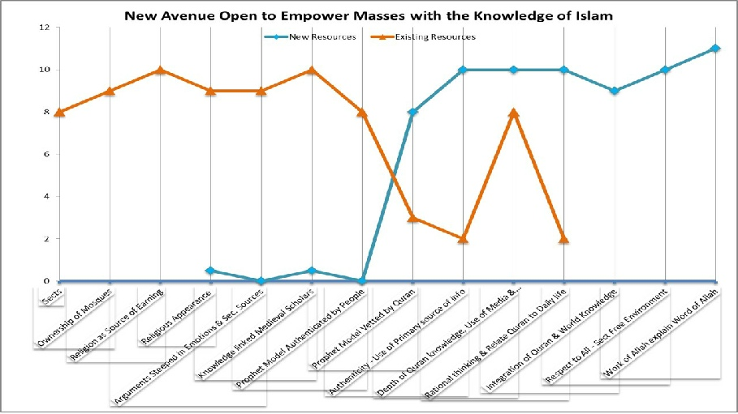
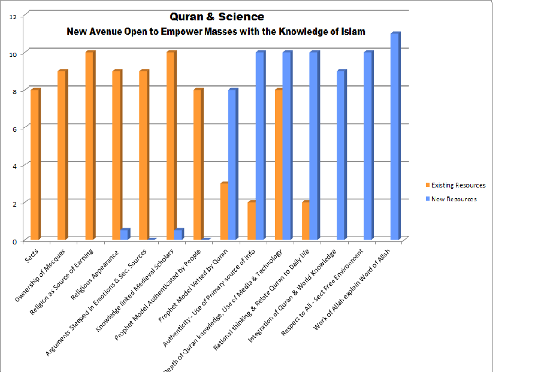

Universe Join Hands to support Word of Allah Emerging new field
- Quran is miss-understood with pre-conceived mindset and hooked-up thinking
- Pendulum of Research & Technology Moved away in 1650
- Educated Pondering Muslims Migrated to the Countries of Research & Technology
- Authenticity Crises Hiding Behind Emotional Arguments
- USWA-E-HUSNA - Role Model of Prophet pbuh.
- Wonderful future of humanity (DEEN system – freedom from exploitations)
- Which Factors that the religion takes for granted but not in Quran so should be eliminated?
- Which Factors better to be reduced well below the industry (religion's) standard?
- Which Factors should be raised well above the industry's standard?
- Which factors should be created that the industry has never offered?
- Recommendations
- Line &bBar Graph
SITUATION ANALYSIS
From 1800 to 2014, it is a period of greatest change in history. Population increased from one billion to seven billion people. There is an unprecedented revolution in science and technology. The world restructured to favour the people of technology (Adam discovered & used malaika)
Quran is miss-understood with pre-conceived mindset and hooked-up thinking.
وَقَالَ الرَّسُولُ يَا رَبِّ إِنَّ قَوْمِي اتَّخَذُوا هَـٰذَا الْقُرْآنَ مَهْجُورًا
25-30. And the Rasool will say, "O my Rabb, this is the very nation of mine which had put the Quran into the shackles of self-conceived ideas, whereby it could not move even a few steps freely."
Where as Quran Say:
56/79. لَّا يَمَسُّهُ إِلَّا الْمُطَهَّرُونَ However, only people who are endowed with purity of mind can benefit from its real import.
(Purity of thought, mind and intellect is a prerequisite for drawing benefit from it. If a person studies it with a prejudiced mind or is influenced by preconceived ideas or preferences, then he will not derive any benefit from it. It is therefore important that before a person undertakes its study, his mind should be clear of any preconceived ideas.)
Pendulum of Research & Technology Moved away in 1650
Before 1700, Muslims were the only superpower in the world. Back in 1650, the pendulum of research & technology shifted to the west and the downfall of Muslims started. Media of press united all intellectuals. Galileo, Newton and Copernicus started looking the work and working of Allah. Imam Ghazali, since 1200 already closed the door for Muslims scientist to emerge. Due to power of media, the pope could not stop developments in Europe. As a result, Osmania Empire's , still living under the glory of past, completed its downfall after World War 1.
Religion could not stem the downfall due to;
1. Religions are too steeped with past glories and provide bleak future for the people of this world.
2. Muslims leaders found vested interest in keeping eyes at back, Keep DEEN as museum dogma to limit access of contemporary minds.
3. By writing Tafaseer's at particular knowledge & wisdom level, medieval Muslim scholars unknowingly hobbled Quran with monopolistic understanding. As a result, hooked up thinking decreased the ability of Quran to address future issues.
Surah 25-Ayah 30. And the Rasool will say, "O my Rabb, this is the very nation of mine which had put the Quran into the shackles of self-conceived ideas, whereby it could not move even a few steps freely
Educated Pondering Muslims Migrated to the Countries of Research & Technology
Educated Pondering Muslims, due to lack of understanding the relevance, felt disconnected from Quran. Many took Islam, as private religion that ends at rituals and play no role in worldly life. Many migrated to the developed societies made by secular people around the world
Some brave educated Muslims struggle with full efforts. They arrange events where Islam is demonstrated in high profile. Religion leadership comes with showering flowers to support such events. But these efforts cannot stop the downfall of Muslims. The events are mostly as 'look busy give no take away'.
Authenticity Crises Hiding Behind Emotional Arguments
We do not give importance to 'LA ILAHA' we just place Allah in our pre-occupied mind. Allah never come at a place cluttered with human-made gods. Many myths may exist in Islam. Once Allah comes in, all those myths get exposed and vanish.
An authenticity crisis is a serious issue. The advanced knowledge is exposing non-authentic content in religion in sects. Lack of research discipline in religion is making it stagnant and non-relevant to the contemporary world. Living in the History snatches vision of the future. Self-obsolescence leads to irrelevance and elimination.
EXAMPLE: Almost 97% of Muslims have non-Quranic concept of Allah. Allah physically moves from Sky seven to Sky one at night. At space station 500 km above the ground, there is no night, as we know?
For a Muslim to go against Quran is dishonest thinking? Still many Muslims commit sins and heinous crimes with the promise to eventually settle in Jennet with prophets. Where as Quran give concept of scale and say:
فَمَن ثَقُلَتْ مَوَازِينُهُ فَأُولَـٰئِكَ هُمُ الْمُفْلِحُونَ ﴿١٠٢﴾ وَمَنْ خَفَّتْ مَوَازِينُهُ فَأُولَـٰئِكَ الَّذِينَ خَسِرُوا أَنفُسَهُمْ فِي جَهَنَّمَ خَالِدُونَ ﴿١٠٣﴾
[23:102]Therefore the ones whose scales prove heavy – they are the successful
[23:103] But those whose scales are light— thereby showing a shortfall in the development of their selves', in Hell they will dwell forever.
فَمَن يَعْمَلْ مِثْقَالَ ذَرَّةٍ خَيْرًا يَرَهُ ﴿٧﴾ وَمَن يَعْمَلْ مِثْقَالَ ذَرَّةٍ شَرًّا يَرَهُ Deeds to the extent of an amount of atom will count
USWA-E-HUSNA - Role Model
Power of Role Model: Looking at the power of role model; 18 years after Higree, two super power vanished from history just to to be replaced with exploitation free system of living Through Kahlifa Hazrat Omar. Persian Empire vanished altogether and Roman Empire shrunk to insignificance. Muslim KHILAFAT emerged that existed as super power until 1650. Principles from the Prophet saw model always provide success.
لَهَا مَا كَسَبَتْ وَعَلَيْهَا مَا اكْتَسَبَتْ
Whatever is done keeping in mind ones own interest as well as the interest of others, helps to develop ones personality, whereas whatever is done simply for one's own interest retards its development.
Highlights of the role model.
1 – Mohammad PBUH 40 years clean and ameen life, pre-prophet hood, with no black spot.
2 – Prophet PBUH demand no money in return of his efforts.
3 – Quran documents complete Role Model, which must be read for actual learning and not just be recited for swab earning
4 - USWA E HUSNA is sect free with secular justice. To be in a sect is shirk and sin. Future is 'AQLE SALEEM' the individual pondering and no more following of any other human. Learn from others but validate from Quran. It was the way of Prophet Ibrahim AS and it is the way of our beloved prophet Mohammad PBUH.
Wonderful future of humanity (DEEN system – freedom from exploitations)
Hubble telescope in 1998 gave wake up call to Muslims where work of Allah started exposing human-made dogmas. Educated pondering Muslim started looking out of tunnel. No Government or religion power can stop the schemes of Allah. The universe is opening up to support Educated Pondering Muslims to spread peace, love, freedom and equality to humanity.
Blue Ocean Strategy for Rational Muslims
Re-Focus to Progress
Uncontested Space, beyond sects, for positive contribution to the welfare of humanity
Help of Malaika as in Quran: Surah 79 Ayah 1-5
وَالنَّازِعَاتِ غَرْقًا ﴿١﴾ وَالنَّاشِطَاتِ نَشْطًا ﴿٢﴾ وَالسَّابِحَاتِ سَبْحًا ﴿٣﴾ فَالسَّابِقَاتِ سَبْقًا ﴿٤﴾ فَالْمُدَبِّرَاتِ أَمْرًا ﴿٥
Pull out potentialities, undoing the bonds (of limitations of knowledge or other exploitation) so to float in the free atmosphere to march forward (to progress). who can then themselves plan and direct their affairs in the light of Divine Laws
Blue Ocean Strategy is a strategy used in business or any situation to avoid head on competition. If we look in business terms, religion provides huge profits without efforts. The term 'Blue ocean strategy was coined by professors W. Chan Kim and Renee Mauborgne in their book "Blue Ocean Strategy: How to Create Uncontested Market Space and the Make Competition Irrelevant" (2005).
Blue Ocean strategy is based upon identification of the following four types of Factors
- Which Factors that the religion takes for granted but not in Quran so should be eliminated?
SECT: A common Muslim wants to remain at distance from Sects and Dogmas. He doesn't have knowledge or expertise to maintain or initiate sects.
EARNING FROM RELIGION: An Educated Pondering Muslim has non-religious skills or resources to earn money. He doesn't want to earn money through religion knowledge or work.
OWNERSHIP OF MOSQUES: Mosques are made and owned by sects. There is hardly any mosque free from sect. This allows sect to have a prime workplace to advance its economic and spiritual activities.
APPEARANCE: An Educated Pondering Muslim does not use religious dress or make religious appearance. He belongs to advanced educated system integrated with all disciplines of life.
EMOTIONS BASE: An Educated Pondering Muslim use arguments, not based upon emotions or secondary sources of information.
PROPHET MODEL VETTED BY PEOPLE: An Educated Pondering Muslim, for an argument, does not use traditions that are authenticated by people but not vetted by Quran. For Hadith as argument, the criterion must me that, The Hadith does not contradict Quran.
- Which Factors better to be reduced well below the industry (religion's) standard?
THEOLOGY: A common Muslim is not expert in theology. He knows history but have not read books of medieval Islamic scholars. On the other hand, religion scholars come from an education system, which was the best system during medieval times but is obsolete now. Theology is still an isolated mystical system with no new ideas allowed. Even the PhD student of theology is not allowed to go outside the given sources
- Which Factors should be raised well above the industry's standard?
PROPHET MODEL VETTED BY QURAN: An Educated Pondering Muslim, for an argument, use traditions that are authenticated by people and are vetted by Quran. Quran and Hadith must not be on opposite sides of an argument.
AUTHENTICITY: USE OF PRIMARY SOURCES: An Educated Pondering Muslim never compromise on authenticity of an information. He always uses information, either from the primary original source or authenticated by an original source. Authenticity is the major strength of an Educated Pondering Muslim.
وَالَّذِينَ إِذَا ذُكِّرُوا بِآيَاتِ رَبِّهِمْ لَمْ يَخِرُّوا عَلَيْهَا صُمًّا وَعُمْيَانًا
Sura Al Furqaan 25 Ayah 73: These people are not swayed by emotions and they take every step after a lot of deliberation, so much so that even when the Divine Laws are presented to them, they do not submit to these by ignoring their intellect, wisdom, rationale and reason. Also, they do not respond to them as if they were deaf and blind. They adopt the Divine Laws only after careful consideration
DEPTH OF THE KNOWLEDGE OF THE QURAN: For an Educated Pondering Muslim, who wants to advance the cause of Islam, the knowledge of Quran is critical. He is ready to accept enhanced understanding any time from anywhere, which must originate from the original word of Quran.
RATIONAL THINKING – RELATE QURAN TO DAILY LIFE: Rational Thinking is the major strength of an Educated Pondering Muslim. He does not have non-rational views and avoids mystical arguments. He talks with clarity in ideas.
- Which factors should be created that the industry has never offered?
INTEGRATION OF QURAN AND WORLD KNOWLEDGE: is the exclusive strength of an Educated Pondering Muslim. It is a new field with new rules of the game.
RESPECT TO ALL, SECT FREE ENVIRONMENT: To remain respectful and secular is important to reach people. We learn it from role model of prophet SWS. Luckily it is a new exclusive field for an Educated Pondering Muslim.
WORK OF ALLAH EXPLAIN WORD OF ALLAH: It is a new, exclusive field opened recently to an Educated Pondering Muslim. Religion has not touched it. This field can lead the way from dogmatic Islam to Deen Islam.
RECOMMENDATIONS
With the support of Allah and Malaika, sky is the limit for Educated Pondering Muslims to shape the societies.
- Use Role Model from all sources as Authenticated (no contradictions) by Quran and work of Allah SWT
- No compromise on Authenticity - Use Primary source of information. No emotions,
- Depth of Quran knowledge is critical. Quran is main strength. It is complete, protected, above doubt and rational. Meaning of Quran inside word of Allah is most convincing.
- Rational thinking. Emotional arguments are not needed. Relate Quran in Daily life, let others feel and see Allah's laws working around them
EXCLUSIVE AREA – TO CONTRIBUTE WITH LOVE
- Integration of Quran & World Knowledge – See the wonders around you - HAMMD
- Positive thinking Respect to all – Love to all – Listen to all – Be empathic - Hate to non
- Each person loves truth, each person have a rational center inside mind - reaching there is the main effort – Allah is with you and Allah is with him
- Work of Allah Explain Word of Allah – is the best explanation and live proof of truth of Quran

SKY IS THE LIMIT
Choose your own sect-free space to work from the position of giving respect, rational thinking, authenticity and integrated knowledge
Spread Respect, Peace, Smiles and Love
Involve all to contribute to establish exploitation free societies on earth

SUMMARY
Educated Pondering Muslim - Field of contribution (Blue bars in Chart above)
Existing Strength Factors
- Prophet role model from Quran or from tradition vetted by Quran
- Strength from Authenticity - Use of primary Source of Information
- Depth of Quran Knowledge - Use of media & Technology
- Rational Thinking - Relate Quran to daily life
Exclusive new Opportunities (Blue Oceans)
- Integration of Quran & World Knowledge
- Respect to all - Sect free environment
- Let Work of Allah explain Word of Allah